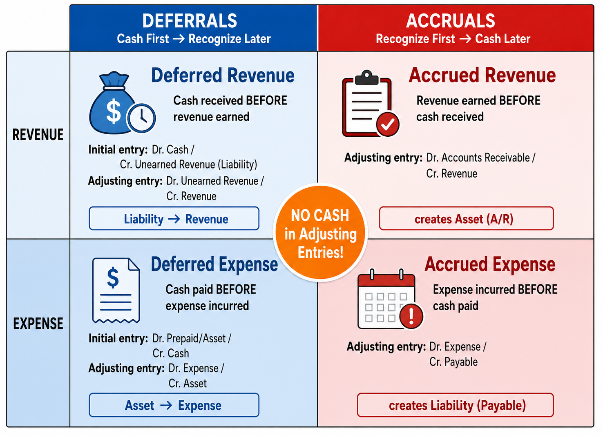
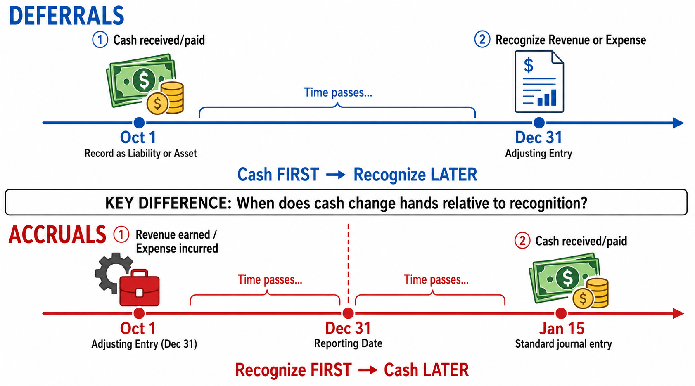
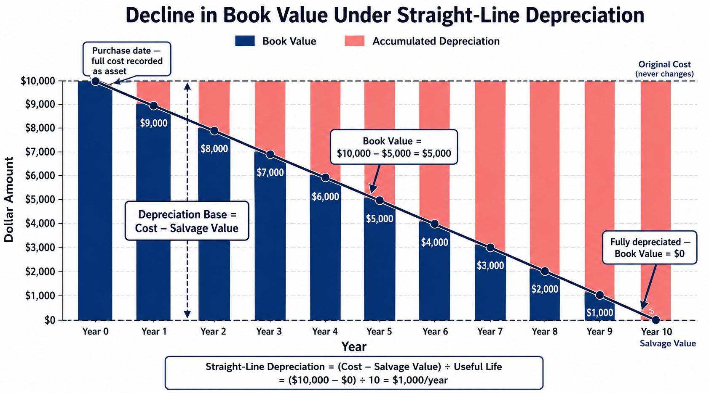

Deferrals, Accruals, and the Adjusted Trial Balance
Each link opens the lecture video at that topic. Timestamps are approximate — a topic may begin a few seconds before or after the mark, so step back a little if you land mid-sentence.
In Chapter 2, we journalized transactions, posted them to the ledger, and prepared a trial balance. That trial balance, however, is technically called an unadjusted trial balance—it is prepared before any end-of-period adjustments. Chapter 3 introduces the adjustments that transform the unadjusted trial balance into an adjusted trial balance, which is the basis for preparing accurate financial statements.
To understand why adjustments are needed, we must first understand the difference between two accounting methods: accrual-basis accounting and cash-basis accounting.
Under accrual-basis accounting, the actual timing of cash flows does not dictate when revenues or expenses are recognized. Cash-basis accounting is simpler and may be used by small private companies—such as sole proprietorships or local retailers—but it does not conform to GAAP. Because this course teaches GAAP-compliant financial accounting, you must thoroughly understand and apply the accrual method.
Prepaid Insurance (Expense Recognition): On May 1, Smart Touch Learning pays $1,200 for insurance covering the next six months ($200 per month).
Revenue Recognition: On April 30, the company receives $600 for services to be performed over the next six months (May through October).
Over a long enough timeline, the total revenue (or expense) recorded is identical under both methods. Cash-basis records the full $600 on April 30, while accrual-basis gradually records it so that by the end of October the total also equals $600. However, because businesses must report financial statements on a periodic basis (quarterly, annually), the exact timing of recognition within each reporting window matters enormously. That is precisely why the time period concept exists—and why GAAP requires accrual-basis accounting.
The time period concept (also called the periodicity assumption) assumes that the life of a business can be divided into specific time periods—months, quarters, or years—and that meaningful financial statements can be prepared for each period. A fiscal year is any 12 consecutive months chosen as the accounting year; it may or may not coincide with the calendar year.
Without the time period concept, there would be virtually no need to differentiate between cash-basis and accrual-basis accounting. Knowing your reporting period allows you to determine how much revenue to recognize and how much expense to record within that specific window.
Since 2018, GAAP has followed ASC 606, which prescribes a detailed five-step process for recognizing revenue. Before this standard, the rule was simply “recognize revenue when earned.” Now, the process is more structured—but highly logical.
Suppose you provide two services: Service A (standalone price $100) and Service B (standalone price $50). In the contract, both are bundled for a discounted lump-sum price of $120.
If only Service A’s performance obligation is satisfied, how much revenue do you recognize? The total standalone value is $150. Service A represents $100 / $150 = 66.7% of the total. Therefore, you recognize 66.7% × $120 = $80—not $100.
The matching principle dictates that expenses must be matched to the specific accounting period in which those expenses helped generate revenue. “Matching” does not mean matching exact dollar amounts of revenues and expenses directly to each other; rather, it means matching the timing. You must record an expense in the same period that it contributed to generating revenue. The ultimate goal is to compute an accurate net income or net loss for each reporting period.
The unadjusted trial balance from Chapter 2 lists revenues and expenses, but these amounts are incomplete. Some economic events—such as the gradual expiration of insurance coverage or the earning of revenue over time—are not triggered by a visible daily transaction or an invoice. By the end of the period, we must update our records through adjusting entries to accurately reflect revenues earned and expenses incurred.
On October 1, you purchase a one-year insurance policy for $1,200. The initial transaction records a debit to Prepaid Insurance and a credit to Cash for $1,200. At this moment, the entire amount is an asset—you haven’t used any coverage yet.
As time passes from October 1 to December 31, three months of coverage are consumed. This consumption does not generate an invoice or a visible transaction, but the reality is that a portion of your asset has expired. You must recognize this with an adjusting entry: debit Insurance Expense $300, credit Prepaid Insurance $300. After posting, the Prepaid Insurance T-account correctly shows $900—the remaining nine months of coverage.
Every adjusting entry shares three characteristics. Whenever you prepare an adjusting entry, double-check that it meets all three:
Adjusting entries fall into two major categories: deferrals and accruals. Each category has two subcategories. The easiest way to remember the difference is by looking at the timing of the cash flow relative to revenue/expense recognition:


Deferred revenue arises when a company receives cash before it has earned the revenue. At the time of receipt, the company records a liability—it owes the customer a product, a service, or a refund. As the company fulfills its obligation over time, the liability decreases and revenue is recognized.
Suppose you run a magazine company and receive a one-year subscription fee of $1,200 on October 1 (Year 1). The subscriber gains the right to receive your service from October 1 (Year 1) through September 30 (Year 2).
Initial Transaction (Oct. 1):
On October 1, the cash is received, but the revenue is unearned—the company is obligated to provide the service over the coming year. Unearned Service Revenue is a liability. Unlike most liabilities that are settled through cash payment, this liability is settled by performing the required services.
Adjusting Entry (Dec. 31):
By December 31, three months of service have been provided. At $1,200 / 12 months = $100/month, three months = $300 of revenue has been earned.
Why debit Unearned Service Revenue? Because the company has fulfilled three months of its obligation, reducing the liability. The remaining $900 liability represents the nine months of service still owed to the subscriber.
Notice that the adjusting entry on December 31 involves recognizing revenue. Because this is a “deferred revenue” adjustment, the entry inherently involves a revenue account. The initial transaction (Oct. 1) is a standard journal entry based on visible transaction data. The adjusting entry (Dec. 31) is recorded at the end of the period to reflect economic activity that occurred over time without a triggering event.
Deferred expenses arise when a company pays cash before the expense is incurred. At the time of payment, the item is recorded as an asset. As time passes and the asset is consumed, it transitions into an expense. Common examples include prepaid rent, prepaid insurance, supplies, and equipment (PPE).
On December 1, 2026, Smart Touch Learning prepays three months of office rent for $3,000.
Initial Transaction (Dec. 1):
This is not an adjusting entry—it is a standard transaction recorded on the date the cash is paid. Adjusting entries are made only at the end of the accounting period.
Adjusting Entry (Dec. 31):
By December 31, one month has passed. One-third of the three-month prepayment ($1,000) has been consumed.
After this adjustment, Prepaid Rent shows a $2,000 balance—the two months of rent remaining.
On October 1, a company purchases a one-year insurance policy for $1,200, providing coverage through September 30 of the following year.
Initial Transaction (Oct. 1):
Adjusting Entry (Dec. 31):
Three months have elapsed (Oct, Nov, Dec). At $1,200 ÷ 12 = $100/month, the expense is $300.
The ending balance of $900 accurately reflects the remaining nine months of coverage.
Be very careful with the naming of accounts in your journal entries. You cannot simply write “Insurance” for both the debit and the credit. You must clearly designate which account is the expense (Insurance Expense—income statement) and which is the asset (Prepaid Insurance—balance sheet) so that it properly reflects on your financial statements.
At the beginning of the period, a company has $50 of supplies on hand. During the period, it purchases an additional $100 of supplies with cash. The Supplies account now shows a $150 debit balance in the unadjusted trial balance.
On December 31, a physical count reveals only $30 of supplies remain. The difference—$120—represents supplies consumed during the period.
The adjusted ending balance ($30) now matches the physical count of supplies on hand.
In practice, the company conducts a physical count of supplies at year-end. Your books say $150, but you only physically have $30. The difference ($120) is what you have used up—and that becomes Supplies Expense. The key is: Supplies Expense = Beginning balance + Purchases − Ending physical count.
When a company purchases equipment, the cost is recorded as an asset. Unlike prepaid expenses or supplies, equipment is not credited directly when recognizing the expense. Instead, we use a special contra-asset account called Accumulated Depreciation.
The numerator (Cost − Salvage Value) is called the Depreciation Base. Do not confuse it with Book Value—they are entirely different concepts.
On January 1 (Year 1), a company purchases equipment for $10,000 cash. The expected useful life is 10 years with $0 salvage value.
Annual depreciation = ($10,000 − $0) ÷ 10 = $1,000 per year.
Adjusting Entry (Dec. 31, Year 1):
Book Value over time:

Why not credit Equipment directly? Because the original cost recorded in the Equipment account never changes. By maintaining separate accounts for the asset (historical cost) and its Accumulated Depreciation, financial statement users can transparently see both the original investment and how much has been allocated as expense to date. The only way the book value decreases is through the increase in Accumulated Depreciation.
On December 2, Smart Touch Learning receives furniture (market value $18,000) from an investor in exchange for shares of common stock. The furniture has a 5-year useful life and $0 salvage value.
Annual depreciation = $18,000 ÷ 5 = $3,600 per year. But the furniture was acquired on December 2, and we need the adjustment for just one month (December):
\(\$3{,}600 \div 12 = \$300 \text{ per month}\)
Book Value on Dec. 31 = $18,000 − $300 = $17,700.
On the balance sheet, Property, Plant & Equipment is presented with both the original cost and accumulated depreciation visible:
| Building | $60,000 |
| Less: Accumulated Depreciation | (250) |
| Net Building | $59,750 |
| Furniture | $18,000 |
| Less: Accumulated Depreciation | (300) |
| Net Furniture | $17,700 |
| Total Net PP&E | $97,450 |
Notice the difference in how deferred expenses are adjusted:
Accrued revenue arises when a company has performed a service (or delivered a product) but has not yet received cash. Because the revenue has been earned, it must be recognized at the end of the period even though no cash has been collected.
Smart Touch Learning is hired on December 15 to provide e-learning services beginning December 16. The company will earn $1,600 per month, with payment due on January 15.
By December 31, half a month of service has been provided. Half of $1,600 = $800 has been earned.
Adjusting Entry (Dec. 31):
Check: End of period? Yes. One income statement account (Service Revenue)? Yes. One balance sheet account (Accounts Receivable, an asset)? Yes. No Cash? Correct.
Cash Collection (Jan. 15):
Accrued expenses are expenses that a business has incurred but has not yet paid. Common examples include salaries and wages, interest, and utilities.
Smart Touch Learning pays its employee a monthly salary of $2,400—half ($1,200) on the 15th, and half ($1,200) on the first day of the next month.
Regular Payment (Dec. 15):
By December 31, employees have worked from December 16 through December 31—another $1,200 of salary expense has been incurred but will not be paid until January 1.
Adjusting Entry (Dec. 31):
Payment (Jan. 1):
What if the company only has one payday per month on the 15th? Suppose a $2,400 payment is made on January 15 covering December 16 through January 15. Does the December 31 adjusting entry change? No. By December 31, the employees have still worked half the pay period (Dec. 16–31). Regardless of when the exact payday falls in January, you must still accrue $1,200 of salary expense in December to reflect the expense incurred in the current period.
On December 1, Smart Touch Learning purchases a $60,000 building in exchange for a one-year loan at 2% annual interest.
The interest rate given in problems is always an annual rate. For one month:
\(\$60{,}000 \times 2\% \times \frac{1}{12} = \$100\)
Even though the actual interest payment won’t occur until the loan matures, the expense was incurred in December and must be recognized now.
The interest rate given in a problem is always annual. If you need to calculate interest for a partial year (one month, three months, etc.), you must multiply by the appropriate fraction of the year. Forgetting to divide by 12 is one of the most common errors on exams.
| Category | Type | Cash Timing | Adjusting Entry | Balance Sheet Account |
|---|---|---|---|---|
| Deferrals (Cash first) |
Deferred Revenue | Cash received first | Dr. Unearned Revenue Cr. Revenue |
Liability ↓ |
| Deferred Expense | Cash paid first | Dr. Expense Cr. Asset (or Contra-Asset) |
Asset ↓ | |
| Accruals (Recognize first) |
Accrued Revenue | Cash received later | Dr. Accounts Receivable Cr. Revenue |
Asset ↑ |
| Accrued Expense | Cash paid later | Dr. Expense Cr. Payable |
Liability ↑ |
After all adjusting entries have been journalized and posted to the general ledger, the company prepares an adjusted trial balance. Its purpose is to:
Failing to record adjusting entries results in incorrect financial statements. To analyze the impact, compare what happens when an adjusting entry is correctly recorded versus when it is erroneously omitted.
The correct adjusting entry for a deferred expense is: debit Expense, credit Asset. Suppose the required adjustment is $100.
Balance Sheet:
Income Statement:
Balance Sheet:
Income Statement:
Before adjustment: Assets = $500, Liabilities = $100, SE = $400. Revenue = $300, Expenses = $100.
| Assets | Liabilities | SE | Expenses | Net Income | |
|---|---|---|---|---|---|
| Before adjustment | $500 | $100 | $400 | $100 | $200 |
| Correctly adjusted | $400 | $100 | $300 | $200 | $100 |
| If omitted (error) | $500 ↑ | $100 | $400 ↑ | $100 ↓ | $200 ↑ |
The takeaway: omitting any adjusting entry distorts both the balance sheet and the income statement. Assets and SE are overstated, expenses are understated, and net income is artificially inflated.
In practice, accountants often use a worksheet—an internal document—to organize the adjusting process. A worksheet has four sections:
To trace an entry through the worksheet: take the unadjusted balance for an account, apply the adjustment in the appropriate column, and compute the adjusted balance. For example, if Prepaid Rent has a $3,000 debit balance in the unadjusted columns and a $1,000 credit adjustment, the adjusted balance is $2,000 debit. This is the same mechanic as calculating ending balances in a T-account.
Once the adjusted trial balance columns are complete, revenue and expense accounts are extended to Income Statement columns, and asset, liability, and equity accounts are extended to Balance Sheet columns.
The standard method records the initial payment as an asset (deferred expense) or the initial receipt as a liability (deferred revenue), then adjusts at period-end. An alternative method reverses the initial recording approach:
Dec. 1 (Initial):
Dr. Prepaid Rent 3,000
Cr. Cash 3,000
Dec. 31 (Adjusting):
Dr. Rent Expense 1,000
Cr. Prepaid Rent 1,000
Result: Rent Expense = $1,000, Prepaid Rent = $2,000
Dec. 1 (Initial):
Dr. Rent Expense 3,000
Cr. Cash 3,000
Dec. 31 (Adjusting):
Dr. Prepaid Rent 2,000
Cr. Rent Expense 2,000
Result: Rent Expense = $1,000, Prepaid Rent = $2,000
The ending balances are identical regardless of which method is used. The alternative method initially records the entire payment as an expense, then reverses the unused portion back to an asset at period-end. The same logic applies to deferred revenues: the alternative method initially records the full receipt as revenue, then adjusts the unearned portion into a liability.